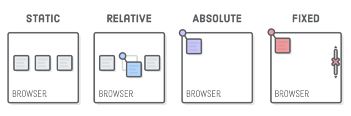

Relative, Absolute and Fixed
What's the difference?
Relative:
The term Relative in this case means "relative to itself". On its own you won't see much of a difference. It's not until you combine it with some of the other attributes do we see how useful it can be. Add top, left, bottom or right into the element along with a measurement and you can manoeuvre the element around the page. You can also use z-index on the element which means it will appear on top of any other statically positioned element.
Absolute:
This type of positioning lets you place the element basically where ever you want by also using the top, left, bottom or right add-ons, Relative to the next parent element with relative or (absolute) positioning that is. The big downside is that it can limit the flexibility of your website as its not affected by and doesnt affect other elements.
Fixed
Fixed is possibly the easiest to understand. Where you put it is where it will stay. Regardless of how far you scroll, the element remains in the same spot on the screen. Very handy for use on a navigation bar that you want visible no matter what.